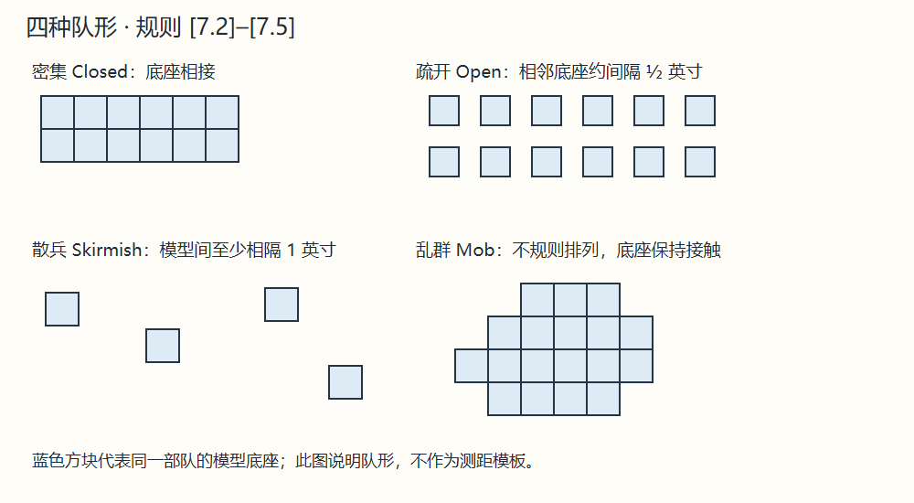

7.0 移动阶段 Movement Phase
本阶段部队可移动、变换队形、调整正面、转向或作特殊移动。
AD&D 使用对应生物的英寸移动率；D&D 按 [3.1] 换算。部分地形只在中级游戏收取移动消耗，变换队形与方向也消耗移动。在移动阶段开始时与敌底座相接，会限制可选行动。


上一节：[6.6] 向乌合之众发令 Giving Orders to a Mob
下一节：A. 队形 Formations
本阶段部队可移动、变换队形、调整正面、转向或作特殊移动。
AD&D 使用对应生物的英寸移动率；D&D 按 [3.1] 换算。部分地形只在中级游戏收取移动消耗，变换队形与方向也消耗移动。在移动阶段开始时与敌底座相接，会限制可选行动。

上一节：[6.6] 向乌合之众发令 Giving Orders to a Mob
下一节：A. 队形 Formations